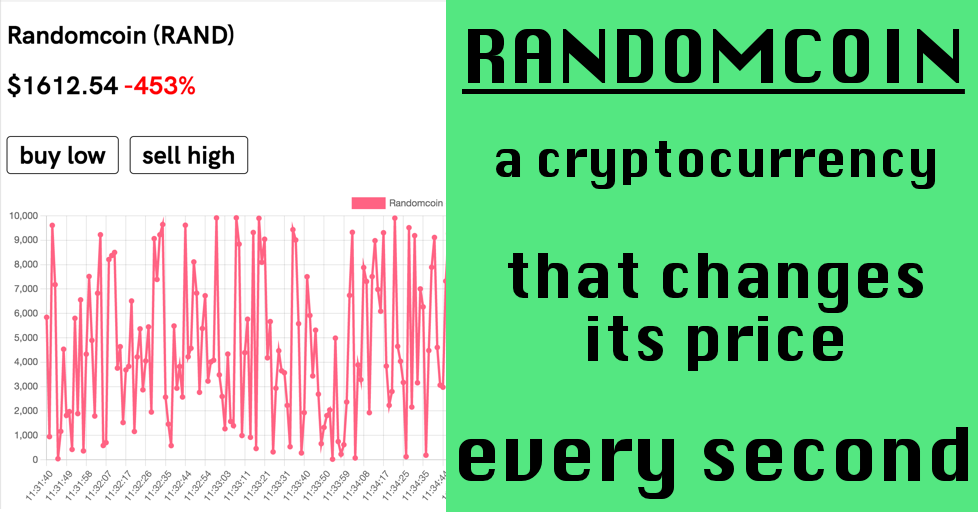

📍 web art // fiction writing // comedy writing // screenwriting // videos // images // on hold 📍
randomcoin
A cryptocurrency that changes its price every second
read more
✨RandomCoin — the game!✨
> play as a crypto investor
> start with $5k and make a fortune
> buy low, sell high
> FREE dopamine!
have fun, like and retweet, buy my work

click click click click →
product hunt →
Russia 404
A countdown timer to the isolation of Russian internet
read more
Mid-April 2019 a law was passed that made it legal for the Russian government to isolate the Russian segment internet from the rest of the world. Together with Nik we made a website counting the days until the law is effective (Nov 1, 2019). I also wrote a piece of dystopian flash fiction, portraying life from one year ahead in the future (in Russian).
click click click click →
Real-time salary counter
Watch how you make money, in real time
Sometimes I think that a 40-hour work week is strange, that's all
click click click click →
Fake British idioms
An hommage to The Meaning Of Liff by Douglas Adams (which I found out about from the readers, as it happens)
Part I →
Part II →
"To pet a black sheep on a full moon: To have sex with a (male) stranger on a first date and have him propose to you the morning after"
Halloween costumes that are hard to explain
Or rather: costumes full of existential anguish →
"A man who will leave the party at 8pm sharp. Unsurprisingly, his costume is constantly looking at his watch and leaving the party at 8pm sharp"
*Note: Literary magazines require that the submitted pieces have never been published before – anywhere, not even on Facebook. As I still have [admittedly, naïve] hopes of publishing some of these stories, I'm not putting them here in full to comply with the requirement; however, if you're interested in reading a certain piece, I would be more than ecstatic to send it to you privately.*
Titles of U.S. visas as premises for new Hollywood movies
205 words
Reimagining the real titles of US visas which exist and are perfectly real and really weird at the same time
"Alien With Extraordinary Ability: A new movie by Stephen Spielberg. The protagonist is a president who can live 24 hours without humiliating anyone on Twitter."
10 hiring commandments translated from corporate English into human English
553 words
Job descriptions in tech are intimidating and inhumane, so making fun of them is the only thing left, I guess
"1) We always hire people who are better than us. And then we fire them, because they make us suffer from inferiority complex."
Annual Awards For People Who Like Winning Awards
619 words
A fictional opening monologue of a fictional character, taking place on a fictional award ceremony
"We all know that winning a prestigious award can be a turning point in one's career. This is not that kind of award. If anything, it's the opposite kind, meaning that it indeed might become a turning point – but not necessarily in a favourable direction."
Unavoidably successful one-million-dollar ideas
1,138 words
Edgy business ideas that are supposed to bring in millions to their founders – purely because of their edginess
"A therapist who speaks only in motivational/inspiration quotes but still charges you $200/hour
A mediocre coffee shop with books about other, much better coffee shops
A machine that keeps count of the total number of times that you had sex in your lifetime"
Hello and welcome to my workshop on negative psychology
930 words
Inspired by the abundance of positive psychology advertisements all over the internet, some of which are strange, and some are just intimidating, I thought I'd flip the whole thing upside down and write a monologue of this weird character who is delusional enough to advertise negative psychology for $2000 a day, and be seemingly very serious about it.
“Greg is really an expert when it comes to making you believe that life is hollow and that there’s no hope whatsoever. Before signing up for the workshop, I was happily married, I had a good job, I loved my kids, and I almost paid off my mortgage. I thought my life couldn’t be better. I thought I did good. My parents were proud of me, and my friends were envious. Then I met Greg, and Greg helped me realize the meaninglessness of everything that I’ve ever been doing. Now I’m divorced, unemployed, I live on the street, and I constantly want to kill myself.”
*Note: Literary magazines require that the submitted pieces have never been published before – anywhere, not even on Facebook. As I still have [admittedly, naïve] hopes of publishing some of these stories, I’m not putting them here in full to comply with the requirement; however, if you’re interested in reading a certain piece, I would be more than ecstatic to send it to you privately.*
Person B
897 words
"Person B is making a very good progress in their exploitation of fears and vulnerabilities of Person A, finding them intuitively, saying just the right things, and gradually pushing Person A into opening up more and more, and admitting other faults, not necessarily related to the events prior, and strengthening the guilt even further, and making them feel more and more insecure."
Someplace For Drinks But Never Dinner
1,227 words
"They started this game that involved saying ’i love you’ in a dozen different ways while having sex, and even though both knew perfectly well that they’re both lying, it worked, as the emotional response was perfectly real, no matter how fake the trigger was, and the sex was significantly better, and once it was over they both went back to their regular selves, which didn’t involve anything romantic whatsoever, much less feelings."
Presence / Sunrise
471 words
"I keep thinking about the first sunrise on Earth. How magnificent and exquisite it must have been, and how symbolic, and how there was no one to look at it and thoroughly understand it, to remember it."
Turtles
442 words
"cross the lake. bob. smells of turtles. cook soup? hardly. no fire. she was exquisite, i fully agree. but can snakes be a little more gentle? can a snake cook soup for you? never tried snake soup. they say it’s healthy. Northerners. strange things constantly happen to me at the airport."
Hello Maria
464 words
"I started smoking not because I like the smell of tobacco or the incredible feeling of exhaling smoke out of my mouth or whatever else other fantasies and associations people might have about smoking, but simply because it’s one of the very few things which give me a feeling of accomplishment, as silly as it sounds, like there is a clear beginning and end, you know, I know that for six or seven minutes I’ll be sitting at a single spot, I’ll roll the cigarette with my fingertips, I’ll fire it up, and I’ll just be inhaling and exhaling without doing much else, and it’s somehow reassuring and I would feel like I’ve done something which is certainly complete nonsense, yet that’s how it is – smoking sort of adds a bit of structure to my otherwise completely chaotic and messy life."
The Other Planet As It Was Seen By An Alien Circa 2018 A.D.
"I’ve travelled to The Other Planet all the way from the planet Disappointment, which is really a misnomer, because my fellow people are generally content with their lives. I’ve heard dozens of urban legends that try explain the name, one featuring a not-very-well-fact-checked dictionary, another a man who never got a decent haircut in his lifetime – but these are all probably speculations. No matter. I like my planet. Other planets are fine, too – I’ve been to nine already – and I wish I could visit all of them before I run out of fuel, either figuratively or literally. The citizens of Disappointment, or disappointianos for short (demonyms always puzzled me with their arbitrariness and unnecessary complexity, not to mention impracticality – never in my life I felt the need to call anyone "disappointiano"), wanted to know everything about The Other Planet, and so it was my duty to go there, learn as much as I could, and come back full of news. The inhabitants of Disappointment are known for their mouth-watering curiosity."
February 25th
- [ ] TODO: paste an excerpt here
The unlikely event of landing on water
"Cora came to Thailand to reunite with her long-distance boyfriend. They’ve been together for seven months, of which six and half were spent four thousand miles apart. Merely two days later they got into a fight. You clearly don’t love me and you don’t care if I’m here or not and you should’ve told me so earlier, much much earlier. Some very ugly words were said. When she woke up at her hotel the next day, Facebook greeted her with a notification: Oliver updated his relationship status. There’s now a new profile picture, too: he’s standing in front of the ocean, smiling; next to him, a young Thai girl, looking suspiciously like a hooker."
Two hot black chicks jump on one lucky guy
"James’ plans did not involve any jumping this day; none whatsoever. He’s not much of a jumper. Never was. He’s more of a tuna-sandwich-with-mustard-at-three-in-the-morning person – and it’s an established fact that people who eat tuna sandwiches at three in the morning are not renowned for their jumping excellence. Although they undoubtedly might’ve been."
Fragile frames
"He was a person of little talent, but one thing he was doing very well was always appearing front and center in every photograph, always with a confident, reassuring, nonchalant smile, always looking directly at the camera, producing an impression that this rectangular frame, once published, indeed genuinely depicts the truth as it is, that he indeed looks like that, that he’s smiling all the time, and that none of that is carefully and pedantically orchestrated. Most, if not all, of his efforts constantly went into building up some sort of image that corresponded to his naive, if not primitive, ideas of success, whatever they were, so he didn’t have much left for other activities, such as actually spend some hours living. What a bizarre idea."
Escape
An hommage to Julio Cortazar
"She loved to explore The City with me. We would walk around the streets together, for hours. Day or night, we would notice people in peculiar clothes, we would take pictures of odd chairs and books thrown away on the street, we would enter quiet courtyards and silently look what’s in them. I don’t think there was any reason to do any of that. No rational reason at least; no explanation as such."
The deadliest pun
A metamodernism experiment
A stand-up comedian is told that after 100 jokes his story ends
Unsubscribe
When a woman is trying to unsubscribe from corporate email spam, the spam reappears in her offline life.
Luggage Belt Drive
A man tries to find his girlfriend after driving through the luggage belt
Victims
A misogynist’s take on #MeToo
Wrong Jane
A mixup leads an HR to call a new girl by someone else’s name in front of the entire company
I’m the artist
A man has strong opinions on a rather questionable art exhibition
Don’t think
The CEO gathers the employees to introduce a new office policy
Killing ideas 101
"When collaboration and ideas are blended together, true miracles are happening. We create ideas together. We play around with them, experiment, and put them in different shapes. And then we kill them. Together. Because ideas are dangerous, and they need to die."
Email Signature Designer
"Personally, I think that people send emails not because they have something important to say to each other, but rather to show off their email signatures."
Learning to read in 2018
the horror and agony of saturday breakfasts
generally i like cooking and eating but sometimes it’s all too much
full text
each saturday i wake up and i’m deeply terrified because it’s yet another morning, which means i’ll have to cook yet another breakfast – for my gluttonous self, and for my significant other who could not care less about cooking but who i love dearly very much nonetheless. sometimes i wake up in the middle of the night, nervous and anxious about the upcoming breakfast. sometimes the anxiety kicks in even as early as the night before. i’m an adult, apparently. not exactly sure how did that happen. not that i feel like one, but whenever you find yourself in such a situation in life that there’s no one to cook breakfast for you and that you have to do it all by yourself -- that’s it, you’re an adult. sure, you can go someplace to eat, but that also involves choices and decisions, plus sharing space with other people, who most likely will be loud and be there, is not necessarily how i want to start my Saturday. the easiest option, of course, is simply not to have any breakfast at all. that way you successfully avoid making a decision about what to eat. the tradeoff is that you’ll be hungry soon, but that’s manageable. making a breakfast is terrifying because it starts with making a decision about what to make. you want it to be good. you want to cook the best breakfast imaginable, adhering to the unreasonably, ridiculously high standards that you set for yourself -- without any rational reason, too -- while all you have is two eggs. you’re going through your memory, mentally listing all breakfasts you ever had, and you’re fed up (not literally) with all of them, and you want something different, but you can’t figure out what exactly, and that’s disturbing. after 20 minutes you go on the internet, looking for ideas, for new recipes, for something to avoid cooking the same scrambled-eggs-avocado-salmon-and-baguette breakfast that you’ve been eating each saturday for the past year and which you already loathe by now but opted for anyway, as it always was a safe choice. (what a first-world-white-people problem this is, really -- it’s almost pathetic.) minimal effort. which of course doesn’t necessarily lead to the best outcomes, but it keeps you in your comfort zone, so to speak. the agony intensifies. after half an hour of staring at all the pretty pictures of breakfasts from across the planet -- Turkish, Mexican, Moroccan, French, Irish, Thai, etc -- and discarding all the recipes either because they require an oven which i don’t have (because choosing one from dozens and dozens of oven out there proved to be impossible) or because they’re too complicated (meaning take more than 25 minutes from start to finish). food is weird. i don’t like talking about food. i don’t remember how i was eating five years ago, but i know for a fact that i didn’t think about it; at least not as obsessively and not that long. it was just food, i guess. now there is this impulse that came from god knows where -- living in Berlin for three years, maybe, the food capital of Europe, according to nobody in particular -- but food became kind of important, and you want to make it nice -- instead of just having a bunch of things that you shovel up your mouth, paying little to no attention to what it feels and tastes like, and moving on with your day. that’s probably the worst thing about grown-up life -- that you have to make decisions about what you’re going to eat, three times a day. doesn’t matter if you care deeply about food or not really, you have to make these choices, and they are tiring and overwhelming and by no means not easy (unless you’re okay with alternating between McDonalds and McDonalds twice a day). regardless of your tastes, you have to eat something. which involves buying groceries (making tons of uneasy choices in the supermarket, too), washing, cutting, etc, etc, or at least opening Uber Eats and trying to figure out what the fuck it is you want to eat today, if anything. next Saturday i’ll just cook sunny sude up on toast and spend one hour saved by not overthinking on reading a book.
The Perplexing Authenticity Of Fictional Characters
Bojack Horseman s05e06 "Free Churro"
Can you make a decent TV episode with 22 minutes of monologue?
full text
BoJack’s mother dies, and he delivers a eulogy, which often veers off into bad standup, and then goes back to depressing and heavy childhood memories. There are no cinematic techniques employed, other than three different angles from which we see BoJack – all the flashbacks are narrated, not shown – so the episode kind of replicates life. We never see the audience (and their response) until the last minute.
But what I’ve been thinking about is that 22-minute interrupted monologues in fiction are rare, and it’s even more unusual on TV where plenty of visual variety is expected, so I’d go as far as to say that this a bold experiment. It’s definitely an unusual experience for the viewers, but it must be even more difficult for the writer. The whole episode is based on the words that the character (with the assistance of a voice over actor) is saying. And you, the writer, are delivering that monologue. Even though you don’t stand there personally and don’t say it yourself in front of a camera, you write the monologue, and it’s damn close. And there’s so much of your own personality going in there, unavoidably, which is a silly side thought that I’m going to leave for now.
My main point is that it’s just very uncomfortable for most of us to go on and talk uninterruptedly for 22 minutes. And writing such a monologue for a fictional character is no easier. The traditional TV episode narrative structure with a clear setup, plot development and some kind of resolution, all shown in a sequence of 30–60-second scenes, mostly dialogue, combined with characters doing things and changing locations, is just so much easier to write. So I have immense admiration and respect for Raphael Bob-Waksberg and his writers for coming up with such a brilliant material.
Thoughts on The Narrative™: is there a possibility that a non-linear mixed-genre narrative can make some sense?
those days in may when it was cold
Various projects that I've been developing for years but never been to produce due to lack of money, talent, time, or else